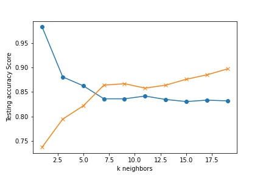

Titanic Survival
Main
(current)
Dataset
Model Features
Models
Decision Tree
K Nearest Neighbors
Logistic Regression
Random Forest
Support Vector Machine
Final Analysis
K Nearest Neighbor
The k-nearest neighbor (KNN) algorithm is a supervised machine learning algorithm. It is used for both classification or for regression analysis. In the titanic survial project, we used it to classify whether the person would likely survive or perish if they were a passenger on the titanic.
This algorithm considers the k nearest neighbors (data points) to predict the classification of the input datapoint. It does this by selecting the specified number examples (k) closest to the query, and determines the most frequent label.
For the Titanic survial problem, we ran the KNN model for k, 1 to 20, to see which value of k is the most useful. 
Viewing the graph, we determined that 6 is the value of k that we would use to when running the KNeighborsClassifer.
KNN was the least useful predictor for our project, since it scored 57% which is not much better than a coin toss.